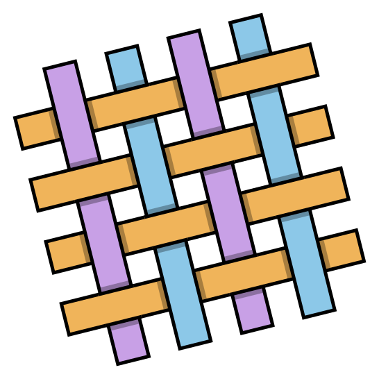

Knot diagrams, strand by strand.
OpenStrand Studio draws knots, weaves and hitches as layers of strands. Where two strands cross, a mask sets which one goes over, and it follows along when you move or reorder them.
Windows and macOS · free and open source (GPL v3) · 12 languages


What it does
-
Over and under, kept right
Each crossing is a mask between two strands. Move or reorder the strands and the masks update with them.
-
Strands you can shape
Drag the ends and control points of a strand, attach a new strand to an end, and rotate an end around its pivot.
-
Groups
Put strands in a group, then move, rotate or duplicate the whole group at once.
-
Exact angles and lengths
Set the angle and the length of a strand by number, and snap its points to the grid.
-
Shadows
A strand that passes under gets a shadow from the one above, so the weave reads at a glance.
-
Samples to learn from
Open a plait, a straight or curved weave, a Kagome weave and more from Settings, and take them apart.
Get it
Windows
An installer with a Start Menu shortcut and the .oss file association. No Python needed.